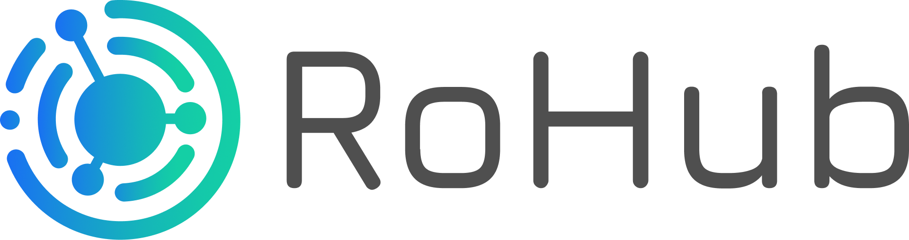

Table of contents

Description
Rohub is a high-level, user-friendly Python API for working with Research Objects.
ROHub can support different stakeholders, with the primary focus on scientists, researchers, students and enthusiasts, enabling them to manage and preserve their research work, to share it and make it available for publishing, to collaborate and to discover new knowledge. However, other user groups can be benefited by ROHub like the Industry that can leverage the platform to externalize their research to a community of researches worldwide in multiple scientific domains, e.g., launching campaings for research on specific topics, and the follow and monitor the progress. Similarly, investors can keep up to date and track scientific advances to fund and get involved in future breakthroughs. As another example, publishers can also leverage ROHub to advertise their journals with researchers, have access to a pool of potential reviewers, and implement more interactive, review processes.
Installation
The source code is currently hosted at our repository.
Package is distributed through Python Package Index (PyPI). To install the package simply type:
pip install rohub
First steps
The library provides a high-level abstraction with ROHub service https://reliance.rohub.org/ using ROHub API https://api.rohub.org/api/. An account with a password in the ROHub service is required to use the library. To sign up please visit https://login.rohub.org/. You can use your credentials to log in through the library, as presented in the example below.
Basic usage
import rohub
rohub.login(username=your_username, password=your_password)
ro = rohub.ros_create(title="my_title", research_areas=["Biology"])
Team
Rohub API library was built with an effort of the Data Analytics and Semantics Department in Poznan Supercomputing and Networking Center. Bogusz Janiak is the main creator and maintainer. People who contributed to the project: Raul Palma.
License
The Linked Data Pipelines has an MIT License, as found in the LICENSE file.